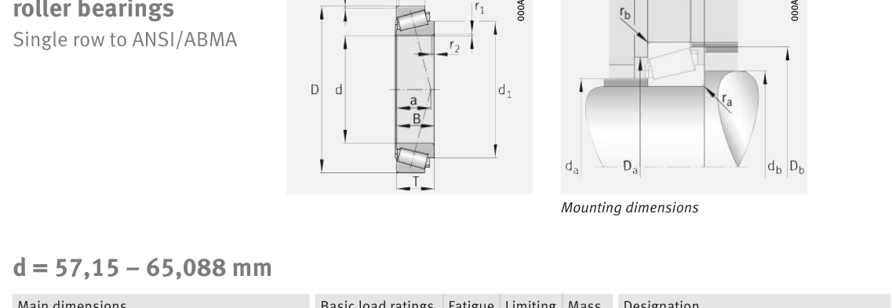

Original catalogue drawing - FAG Schaeffler HR 1, page 622

Scanned from the manufacturer catalogue page listing this part number. All part numbers printed on that table share the same drawing.
Scale cross-section
Blue = inner / outer ring, yellow = rolling element. Drawn to scale from this part's own
dimensions for selection reference only - not a manufacturing or assembly drawing.
Dimension table (mm / inch)
Symbol
Dimension
mm
inch
d
Bore diameter
63.5
2.5
D
Outside diameter
130
5.1181
B
Inner-ring / bearing width
36.17
1.424
T
Overall assembly width
36.937
1.4542
C
Cup / outer-ring width
29
1.1417
Notes
Weights are given in kg. Load ratings are shown in both the original catalogue units and the converted value (1 N = 0.2248 lbf). Data is provided for selection reference only - confirm against the latest official catalogue before ordering.
Main dimensions
Bore d (mm)
63.5
Outside dia. D (mm)
130
Width B (mm)
36.17
Overall width T (mm)
36.937
Cup width C (mm)
29
Inner-ring OD d1 (mm)
98.5
Load ratings & speeds
Basic dynamic load rating Cr (lbs)
37768
Basic static load rating Cor (lbs)
53505
Basic dynamic load rating Cr (N)
168000
Basic static load rating C0r (N)
238000
Basic dynamic axial rating Ca (N)
4
Fatigue limit load Cur (N)
29500
Factor e
0.36
Factor Y
1.65
Factor Y0
0.91
Limiting speed nG (rpm)
5,600
Effective load centre a (mm)
29
Weight
Weight (kg)
2.29
Mounting dimensions (fillets / shoulders)
Chamfer r2 min (mm)
3.6
Shaft shoulder da (mm)
78
Shaft shoulder db (mm)
85
Housing shoulder Da (mm)
114
Housing shoulder Db (mm)
121
Housing fillet ra max (mm)
3.6
Fillet rb max (mm)
3
Bearing life (ISO 281 basic rating life)
C / P
Equivalent load P (N)
L10 (106 rev)
L10h at 1,800 rpm
4
42,000
102
941
6
28,000
392
3,634
8
21,000
1,024
9,481
10
16,800
2,154
19,948
15
11,200
8,323
77,069
Basic rating life per ISO 281: L10 = (C/P)10/3 with C = 168,000 N. Hours = L10 x 106 / (60n). Life-modification factors for lubrication, contamination and temperature (aISO) are not included.
Source & traceability
Brand
FAG
Source catalogue
FAG / Schaeffler Rolling Bearings HR 1
Catalogue page
p.622 (dimensions)
Load ratings in newtons, fatigue limit load Cur, limiting speed nG and reference speed nB.
Send us the quantity you need and we will come back with price and
lead time, normally within 24 hours. Equivalent parts from other brands can be quoted at the same time.